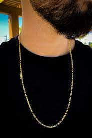

Essa loja tem como foco principal, te indicar melhores modelos para usar suas correntes
A corrente veneziana possui elos interligados que também podem ser duplos, formando uma conexão delicada, são bem justas que quase não possui espaço entre elas.
Essa é uma corrente mais delicada e também bem estilosa, dando um destaque bem legal para o seu estilo
É uma corrente muito utilizado por homens, a corrente grumet possui elos longos ou duplos com espessura bem grossa. É possível encontrar modelos mais delicados onde fica mais feminino.
Corrente usada com mais frequencia com blusas de frio com suéters nesse Estilo
A corrente Cartier é formada por pequenos elos que se ligam uns aos outros. É um modelo clássico encontra-se com variados banhos e pingentes.
A Cartier é um modelo mais simples, ela é mais usadas com as bluas polos
Sua malha é formada por três pequenos anéis conectados à um elo maior. Um modelo que é considerado unissex. Ideal para um estilo urbano, com looks mais despojados.
A corrente Figaro é mais utilizada como modelos despojados, tanto com modelos masculino quanto com ofeminino